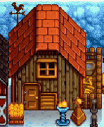
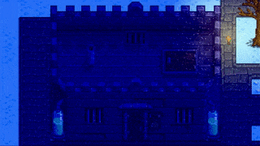

Random Events
- See also: Secrets.
Random Farm Events happen overnight when the player sleeps.
Farm events
One farm event is randomly selected each night. An event is always selected (except if there's a wedding), but it might have extra requirements that make it do nothing; in that case, it still prevents other events from triggering. The event is chosen in the order listed below.
Nothing
No event happens on the night before a wedding, or if another event is selected below but does nothing.
Earthquake
An earthquake on the 3rd day of Summer Year 1 unlocks the railroad area.
Bundle completion
An event is shown for completing a Community Center or Joja bundle.
Strong wind storm
A strong wind storm blows the Big Tree down and replaces it with the Giant Stump. The quest has a 10% chance to trigger each night after the Greenhouse construction. The stump may then be interacted with to begin the "The Giant Stump" quest.
The Crop Fairy
Except in winter, there's a 1% chance of the fairy event being chosen. If it's not raining, the event chooses 100 random terrain features; at least one of those must be a crop that's not from Wild Seeds and not fully-grown. If it's raining or no crop was found, the event does nothing.
The crop fairy fully grows all crops in a 5x5 area around the selected crop, so they're ready to harvest. Although the center crop can't be from Wild Seeds, one of the surrounding crops can be; in that case, they'll all produce the same item chosen at random.

The Witch
There's a 1% chance of the witch event being chosen. The event randomly chooses one coop (each with an 80% chance if it's been upgraded at least once, and has fewer than 50 placed objects), or one Slime Hutch (each with a 50% chance if it contains at least one slime or other NPC, and has no Wicked Statue). If one of the following buildings were not selected, the event does nothing.
The witch flies over the selected building.
- If a coop was selected, she leaves a Void Egg that can be incubated into a Void Chicken.
- If 100% Perfection has been reached, A gold witch can instead appear and leave a Golden Egg that can be incubated into a Golden Chicken.
- If a slime hutch was selected, she turns any slimes inside into black slimes.
In late-game, the Witch's Hut can be visited, but the witch is never present.

The witch flying over a coop. |

The witch flying over a slime hutch. |
Meteorite

There's a 1% chance of the meteorite event being chosen. The event chooses a random 3x3 area on the Farm and checks if there's a 2x2 area within that contains no water, placed objects that block movement, buildings, resource clumps, or farm animals. If no such 2x2 area is found, the event does nothing.
A unique Meteorite sound effect plays and a meteorite appears the next day on the farm in the selected area. Any crops or paths in that area are destroyed. This can be counter-productive, especially if the crops being grown are of more value than the loot from the meteorite. In the morning, a message is shown saying "An explosion was heard in the night..."
Meteorites don't despawn naturally and require a Gold Pickaxe or better to mine. (A Gold Pickaxe requires 7 hits, and an Iridium Pickaxe requires 6 hits.) They drop 6 Iridium Ore, 6 Stone, and 2 Geodes, and have a 25% chance to drop a Prismatic Shard.

Trivia: From v1.0 to v1.04 of the game (i.e., from February 26, 2016 to March 1, 2016), the meteorite was gray with no spiky projections.
Strange Capsule
After Year 1, there's a 0.8% chance of the strange capsule event being chosen. The event does something only if a randomly chosen tile on the farm is clear and allows item placement. It will emit a small amount of light when placed. In the morning, a message is shown saying "A strange sound was heard in the night..."
A unique UFO sound effect plays, and a Strange Capsule appears on a random tile of the farm.[1] The strange capsule can be picked up and placed around the farm. It turns into a broken Empty Capsule after about three days, unless placed inside of storage container such as a chest, preventing it from breaking unless it is taken out. If the capsule is broken, it enables a further Easter egg. It can also turn into a broken Empty Capsule if applied with Fairy Dust. Once this event has happened in a save file, it cannot happen again.
The Strange Capsule cannot spawn on the Ginger Island farm, but the event may still happen while sleeping in the Island Farmhouse. In this case, the Strange Capsule will appear as usual in a random location on the mainland farm.

Stone Owl
There's a 0.5% chance of the stone owl event being chosen. The event checks the same conditions as the strange capsule event, though unlike the Strange Capsule, more than one Stone Owl can spawn in a save file and the Stone Owl can appear during Year 1.
An owl sound effect plays, and a unique Stone Owl appears on a random tile of the Farm. This owl is unrelated to the Stone Owl sold at the Night Market.
The description reads: "It's not clear where this came from, but it looks very fine."
Personal events
If no farm event was selected from the above list (regardless of whether the event did something), the game chooses from one of these events instead.
Child is born or delivered
- See also: Children
This event is chosen if the player agreed to have a child 14 days ago in the spouse asks for a child event. The child appears in the farmhouse crib the next day.
Bug: if another event is selected above, the child is never born or delivered.
Spouse asks for a child
If married to an NPC:
- This event has a 5% chance of being chosen if the player has been married for at least 7 days, sleeping at home, have at least 10 hearts with their spouse, have the nursery upgrade, have not removed the crib, aren't already having a child, and have no children or one child at the toddler age.
- The player's spouse asks them if they want a child. If agreed to, the child is born or delivered after 14 days.
If married to another player:
- This event has a 5% chance of being chosen if the player is sleeping at an eligible home and aren't already having a child. A home is eligible for children if it's owned by one of the married players, has the nursery upgrade, and doesn't already have two children.
- One player is randomly chosen to propose having children; if both players accept, the child is born or delivered after 14 days.
In either case, the player can safely decline without repercussions; the event will be rechecked on later nights with the same conditions. See Marriage, Children, and Multiplayer#Marriage for more info.
Farm animal birth
- See also: Animals
There's a 50% chance the farm animal birth is selected. The event randomly chooses one upgraded Barn that isn't full (each with a chance equal to 0.55% * number of animals inside, e.g., 1.65% for three animals), then one random animal in that building. If no building is selected or the animal can't give birth (e.g., it's a baby or pregnancy is disabled for that animal), the event does nothing.
The selected farm animal in the barn gives birth. A message is shown asking the player to name them.
Wild animal attack
- See also: Animals
This event is guaranteed to be chosen if no other event was, but has a 50% chance of doing nothing. The event randomly chooses one barn or coop whose door is closed with some animals outdoors (each with a chance equal to 1 / number of buildings, e.g., 100% for one building and 50% for two).
A unique sound of dogs plays, and one animal left outside of the selected building disappears permanently. All other animals show a message indicating "Something bad happened last night.", but are otherwise unaffected.
History
- 1.5: Fixed spawn requirements for the random Stone Owl and Strange Capsule night events, making them much less rare.[2] There is a new Strange Capsule secret.
- 1.5.3: The Strange Capsule now only spawns once per game. Made the Stone Owl rarer and touched up the sprite.
- 1.6: Added Strong Wind Storm random event. Added a Prismatic Shard to Meteorite drops.
- 1.6.3: Reduced rate of the Meteorite dropping a Prismatic Shard from 100% to 25%.
References
- ↑ See SoundInTheNightEvent::SetUp in the game code.
- ↑ From ConcernedApe on Twitter: "the spawning requirements were changed in 1.5... it used to be essentially impossible for them to spawn because of a mistake in the code"
Twitter link: https://twitter.com/ConcernedApe/status/1341861745380356097
Archive link: https://archive.ph/3WwWa